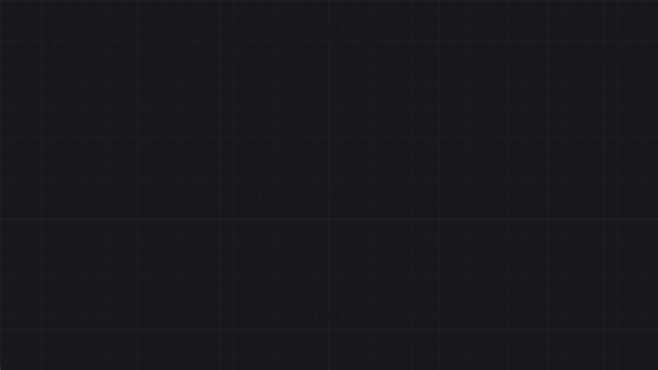

5 · UI, données & orienté objet
Afficher une interface (Widget Blueprint), regrouper des données (Structure, Data Table, Data Asset, Enumeration), structurer ses classes (héritage, polymorphisme, Blueprint Interface) et partager des fonctions utilitaires (Blueprint Function Library).
Widget Blueprint (UMG)
Un Widget Blueprint (préfixe WBP_, User Interface → Widget Blueprint) décrit un morceau d'interface : HUD, menu pause, barre de vie, inventaire. Il a deux onglets : le Designer (on place les éléments visuellement) et le Graph (la logique, comme un Blueprint normal).
| Étape | Comment |
|---|---|
| 1. Créer | Content Browser → Add → User Interface → Widget Blueprint, puis choisir la classe parente : User Widget dans l'immense majorité des cas (le plugin Common UI, à activer, ajoute des parents pensés pour la manette et les menus empilés). Préfixe WBP_ |
| 2. Dessiner | onglet Designer : glisser des widgets depuis la Palette dans la Hierarchy ou sur la zone de dessin |
| 3. Programmer | onglet Graph : événements, fonctions et variables du widget, comme dans un Actor |
| 4. Afficher | depuis un autre Blueprint : Create Widget puis Add to Viewport (voir plus bas) — un Widget Blueprint ne se pose pas dans le niveau |
Les widgets les plus courants, en un coup d'œil (le catalogue complet est dans Les widgets de la Palette) :
| Widget | Rôle |
|---|---|
Canvas Panel | racine libre : positions absolues + ancres (HUD plein écran) |
Vertical Box / Horizontal Box | empile les enfants — menus, listes de boutons |
Overlay, Size Box, Grid Panel | superposer, forcer une taille, grille (inventaire) |
Text, Image, Progress Bar | afficher : texte, icône, jauge (valeur 0 → 1) |
Button, Slider, Check Box | interactions — événements On Clicked, On Value Changed… |
Dans un Canvas Panel, l'ancre d'un élément est le point de l'écran auquel il reste accroché quand la résolution change. Une barre de vie ancrée en haut à gauche y reste sur tous les écrans ; sans ancre adaptée, elle dérive ou sort de l'écran en 4K / ultra-large.
Afficher un widget
Remove from Parent).| Nœud | Effet |
|---|---|
Set Input Mode Game Only | le jeu reçoit tout l'input — HUD en jeu |
Set Input Mode UI Only | seule l'UI reçoit l'input — menu principal, écran de pause |
Set Input Mode Game and UI | les deux — inventaire ouvert pendant que le jeu tourne |
Set Show Mouse Cursor (PlayerController) | afficher le curseur — à coupler avec les modes UI |
Set Game Paused | met le monde en pause ; les widgets continuent de fonctionner |
Mettre à jour l'UI : binding ou événement
Un élément peut être bindé (bouton Bind à côté d'une propriété dans le Designer) : une fonction est alors appelée à chaque frame pour recalculer la valeur. Simple, mais coûteux quand les widgets se multiplient. L'alternative événementielle : le personnage prévient le widget seulement quand la valeur change (appel direct via la référence, ou un Event Dispatcher OnHealthChanged auquel le widget s'abonne).
Event Construct tourne quand le widget est créé en jeu (équivalent de BeginPlay). Event Pre Construct tourne aussi dans l'éditeur — pratique pour prévisualiser un widget réutilisable paramétré (texte d'un bouton, couleur) directement dans le Designer. Pour accéder à un élément depuis le Graph, cocher Is Variable sur celui-ci.
Le Designer en un coup d'œil
| Panneau | Rôle |
|---|---|
| Palette | la liste des widgets à glisser sur la zone de dessin (onglet User Created : vos propres widgets) |
| Hierarchy | l'arbre des widgets, comme les composants d'un Actor : l'ordre compte (le dernier est dessiné par-dessus) |
| Details | les réglages du widget sélectionné : Slot (sa place dans son parent), apparence, visibilité, événements (On Clicked…), case Is Variable |
| Animations | la timeline en bas : les animations du widget (voir plus bas) |
| Bascule Designer / Graph | en haut à droite : dessiner ou programmer |
| Screen Size (zone de dessin) | simule une résolution ou un ratio : vérifier qu'un HUD tient en 16:9 comme en ultra-large |
Hiérarchie, slots et tailles
Un enfant ne choisit pas seul sa position : c'est son slot (le « emplacement » que lui donne son parent) qui la règle, et les propriétés du slot dépendent du type de parent.
| Parent | Réglages du slot |
|---|---|
Canvas Panel | Anchors, Position X/Y, Size X/Y, Alignment (le point du widget qui se pose sur la position), Size To Content, ZOrder |
Vertical / Horizontal Box | Padding (marge), Size : Auto (juste ce qu'il faut) ou Fill (se partage l'espace restant, au prorata de la valeur donnée), Horizontal / Vertical Alignment |
Overlay | Padding et alignements : tous les enfants se superposent dans la même zone |
Size Box, Scale Box | forcer une largeur / hauteur ; agrandir ou réduire son contenu pour qu'il tienne dans la zone |
Un menu fait de boutons placés au pixel dans un Canvas Panel se casse à la première résolution différente. Le mettre dans un Vertical Box (boutons en Fill ou Auto, avec du Padding) l'organise tout seul. Réserver le Canvas aux éléments ancrés à un bord de l'écran. Pour la taille générale de l'UI, voir Project Settings → Engine → User Interface (courbe de DPI).
Visibilité
| Valeur | Affiché | Prend de la place | Reçoit les clics |
|---|---|---|---|
Visible | oui | oui | oui |
Collapsed | non | non (les voisins comblent le vide) | non |
Hidden | non | oui (le trou reste) | non |
Hit Test Invisible | oui | oui | ni lui ni ses enfants |
Self Hit Test Invisible | oui | oui | pas lui, mais ses enfants oui |
Un widget Image posé par-dessus un bouton capte les clics à sa place. Le passer en Hit Test Invisible laisse le clic traverser jusqu'au bouton. Dans le Graph : Set Visibility (nœud du widget).
Animations de widget
L'onglet Animations (en bas du Designer) sert à animer un widget sans Timeline : + Animation, puis + Track pour choisir un widget, et des clés sur ses propriétés (Render Opacity pour un fondu, Render Transform pour un déplacement ou un zoom, une couleur). Chaque animation devient une variable du widget, utilisable dans le Graph.
| Nœud | Rôle |
|---|---|
Play Animation | lance l'animation : Start at Time, Num Loops to Play (0 = en boucle), Play Mode (Forward, Reverse, Ping Pong), Playback Speed |
Stop Animation | l'arrête |
Bind Event to Animation Finished | exécute un événement quand elle se termine : le moyen d'enchaîner |
Jouer l'animation de fondu en Reverse, et brancher Remove from Parent sur son Animation Finished : retirer le widget tout de suite couperait l'animation avant qu'elle soit visible.
Widgets réutilisables
Un Widget Blueprint peut en contenir d'autres : WBP_HealthBar, une fois créé, se glisse depuis l'onglet User Created de la Palette dans le HUD, dans un menu, dans une liste. Même principe qu'un composant d'Actor : écrire une fois, utiliser partout.
| Outil | Rôle |
|---|---|
| Variables Instance Editable | réglables dans les Details du widget enfant, une valeur différente par usage (le texte d'un bouton, une couleur) |
| Expose on Spawn | la variable devient un pin sur Create Widget |
Event Pre Construct | applique ces variables dans le Designer, pour voir le résultat sans lancer le jeu |
| Event Dispatchers du widget | l'enfant annonce « confirmé », « fermé » ; le parent s'abonne par le bouton + d'événements dans les Details (voir Dispatchers) |
Named Slot | une zone vide que le parent remplit lui-même — pour un cadre générique (fenêtre avec titre) dont le contenu change |
Listes et widgets dans le monde
| Besoin | Outil |
|---|---|
| inventaire ou liste dont les éléments se répètent | List View / Tile View : un widget d'entrée qui implémente l'interface User Object List Entry, rempli dans On List Item Object Set ; les éléments se donnent par Add Item et sont des objets (pas des structures — envelopper les données dans un petit objet, ou un Data Asset). Seules les lignes visibles sont créées : à préférer à cent widgets dans un Vertical Box |
| barre de vie flottant au-dessus d'un ennemi | un Widget Component ajouté à l'Actor : Widget Class, Space (Screen reste face à la caméra, World est un panneau dans le monde), Draw Size. Le widget se récupère par Get User Widget Object puis Cast |
Exemple : une barre de vie
| Étape | Comment |
|---|---|
| 1. Le widget | WBP_HealthBar avec une Progress Bar (Is Variable, nommée HealthBar) et une fonction SetPercent qui appelle Set Percent sur elle |
| 2. Le HUD | WBP_HUD contient un WBP_HealthBar ancré en haut à gauche ; le PlayerController crée le HUD au BeginPlay et garde la référence (voir Afficher un widget) |
| 3. La source | le HealthComponent du personnage appelle son dispatcher OnHealthChanged à chaque changement |
| 4. Le lien | au démarrage, le HUD (ou le PlayerController) s'abonne à OnHealthChanged ; l'événement appelle SetPercent avec Health / MaxHealth. Rien ne tourne à chaque frame |
Les widgets de la Palette
La Palette range les widgets en onglets (Common, Input, Panel, Primitive, Optimization, Special Effects, User Created…) dont le contenu exact varie un peu d'une version à l'autre. Ils sont regroupés ici par rôle.
Afficher
| Widget | Rôle | À retenir |
|---|---|---|
Text (Text Block) | un texte | type Text (traduisible) ; taille, police, couleur, ombre dans Appearance ; Set Text pour le changer |
Rich Text Block | un texte avec des passages stylés (gras, couleur, icône en ligne) | les styles se définissent dans une Data Table de styles ; balises du type <Warning>…</> dans le texte |
Image | une texture, un matériau ou une couleur unie | propriété Brush (image, taille, Tint) ; Set Brush from Texture pour la changer en jeu |
Progress Bar | une jauge | Percent de 0 à 1 (Set Percent), sens de remplissage, images de fond et de remplissage ; Marquee pour une attente sans valeur |
Border | un cadre qui contient un enfant | fond coloré ou image derrière un contenu, avec Padding — base d'un panneau |
Spacer | un vide de taille fixe | écarter deux éléments d'une boîte |
Throbber / Circular Throbber | un indicateur de chargement animé | écrans d'attente |
Background Blur | floute ce qui est derrière | fond d'un menu pause ; coûteux sur de grandes surfaces |
Saisir et interagir
| Widget | Événements / réglages clés | Usage |
|---|---|---|
Button | On Clicked, On Pressed, On Released, On Hovered, On Unhovered ; Style : un aspect Normal, Hovered, Pressed, Disabled | contient un enfant (souvent un Text) ; Set Is Enabled pour le griser |
Check Box | On Check State Changed ; Is Checked | options à cocher |
Slider | On Value Changed ; valeur de 0 à 1 par défaut (min / max réglables) | volume, luminosité |
Spin Box | On Value Changed ; saisie ou glissé | champ numérique |
Editable Text / Editable Text Box | On Text Changed, On Text Committed (avec la raison : Entrée, perte de focus…) | nom du joueur, recherche ; version Multi-Line pour plusieurs lignes |
Combo Box (String) | Add Option ; On Selection Changed | liste déroulante : résolution, langue |
Input Key Selector | On Key Selected | réaffecter une touche dans un écran d'options |
Expandable Area | en-tête + corps repliable | sections d'options |
Disposer
| Widget | Disposition |
|---|---|
Canvas Panel | positions libres avec ancres — HUD plein écran |
Horizontal Box / Vertical Box | en ligne / en colonne |
Wrap Box | en ligne, qui passe à la ligne quand la place manque (liste d'étiquettes) |
Grid Panel / Uniform Grid Panel | grille aux cellules choisies / de même taille (inventaire) |
Overlay | superposé, dans la même zone |
Scroll Box | défilement quand le contenu dépasse (liste, journal) ; Scroll Widget Into View pour amener un enfant à l'écran |
Widget Switcher | un seul enfant visible à la fois : Set Active Widget Index — onglets, pages d'options |
Size Box, Scale Box | forcer une taille ; adapter le contenu à l'espace disponible |
Safe Zone | garde le contenu dans la zone sûre des téléviseurs et consoles |
Named Slot | zone laissée libre pour le widget parent — voir Widgets réutilisables |
Listes, performances, effets
| Widget | Rôle |
|---|---|
List View, Tile View, Tree View | listes, grilles et arbres de données, dont seules les lignes visibles sont créées |
Dynamic Entry Box | une boîte dont on ajoute des enfants d'une classe donnée avec Create Entry — rangées d'icônes, liste de joueurs |
Retainer Box, Invalidation Box | mettent en cache le rendu d'un panneau qui change rarement |
| User Created | vos propres Widget Blueprints, réutilisables comme n'importe quel widget |
Événements, focus et drag & drop
Réagir à la souris et au clavier
Au-delà des événements de chaque widget (On Clicked…), un Widget Blueprint peut surcharger les fonctions d'entrée de toute la surface : My Blueprint → Functions → Override.
| Fonction à surcharger | Appelée quand… |
|---|---|
On Mouse Button Down / Up | un bouton de souris est enfoncé / relâché sur le widget |
On Mouse Enter / Leave / Move | le curseur entre, sort, bouge |
On Key Down / Up | une touche est pressée alors que le widget a le focus |
On Focus Received / Lost | le widget gagne ou perd le focus |
Tick | chaque frame (à éviter, comme pour un Actor) |
La plupart renvoient un Event Reply : Handled (« j'ai traité cet input, ne le transmets pas ») ou Unhandled (« je ne m'en occupe pas, passe au suivant »). Oublier de répondre Handled laisse l'input continuer vers le jeu en dessous.
Le focus et la manette
| Élément | Rôle |
|---|---|
| Is Focusable | le widget peut recevoir le focus clavier / manette (un bouton l'est déjà) |
Set Keyboard Focus / Set User Focus | donner le focus à un widget précis — le premier bouton d'un menu, pour que la manette puisse naviguer |
Set Input Mode UI Only → pin In Widget to Focus | règle le mode d'input et le focus en un seul nœud |
| Navigation (Details du widget) | où va le focus avec les flèches ou le stick : Escape, Explicit, Wrap, Stop… pour chaque direction |
Glisser-déposer
| Étape | Comment |
|---|---|
| 1. Détecter | dans On Mouse Button Down, Detect Drag If Pressed (touche : bouton gauche), dont le résultat est la valeur de retour |
| 2. Créer l'opération | On Drag Detected : Create Drag And Drop Operation avec un Payload (l'objet déplacé : un item, un Data Asset) et un Default Drag Visual (le widget qui suit le curseur) |
| 3. Survoler | On Drag Over sur la cible : afficher une surbrillance |
| 4. Déposer | On Drop sur la cible : lire le Payload de l'opération, mettre à jour les données, renvoyer Handled |
| 5. Annuler | On Drag Cancelled : rien n'a accepté le dépôt |
L'opération transporte un Payload (la donnée) ; le widget visuel qui suit le curseur n'est qu'un décor. Mettre à jour le modèle (l'inventaire) au dépôt, puis laisser l'interface se redessiner d'après lui — c'est ce qui évite les doublons et les objets qui disparaissent.
Infobulles, parler au widget
| Besoin | Comment |
|---|---|
| Infobulle simple | Details → Behavior → Tool Tip Text |
| Infobulle riche (icône, statistiques) | Tool Tip Widget : un Widget Blueprint à afficher (ou une fonction qui le crée) |
| Du jeu vers le widget | garder la référence renvoyée par Create Widget dans une variable et appeler ses fonctions ; Get All Widgets of Class si on ne l'a pas gardée |
| Du widget vers le jeu | Get Owning Player / Get Owning Player Pawn (puis cast), ou un Event Dispatcher du widget pour annoncer « bouton Jouer cliqué » |
| Retirer | Remove from Parent sur le widget, Remove All Widgets pour tout, Is in Viewport pour savoir. Event Destruct s'exécute au retrait |
Exemples : menu principal et pause
Menu principal
| Étape | Comment |
|---|---|
| 1. Un niveau de menu | L_MainMenu, avec un GameMode Override dont la Default Pawn Class est None : pas de personnage |
| 2. Afficher | au BeginPlay du PlayerController : Create Widget (WBP_MainMenu) → Add to Viewport → Set Input Mode UI Only (avec In Widget to Focus) → Set Show Mouse Cursor coché |
| 3. Jouer | On Clicked du bouton : Open Level (by Name) vers le niveau de jeu — le widget disparaît avec l'ancien niveau |
| 4. Options | un Widget Switcher entre le menu et la page d'options : Set Active Widget Index |
| 5. Quitter | Quit Game (avec le PlayerController en Specific Player) |
| 6. Au lancement du jeu | dans le niveau de jeu, repasser en Set Input Mode Game Only et masquer le curseur |
Menu pause
| Étape | Comment |
|---|---|
| 1. L'input | une Input Action IA_Pause, avec l'option Trigger When Paused cochée — sinon, une fois le jeu en pause, elle ne peut plus le relancer |
| 2. Ouvrir | Set Game Paused (vrai), Create Widget + Add to Viewport, Set Input Mode Game and UI ou UI Only, curseur visible |
| 3. Reprendre | Remove from Parent, Set Game Paused (faux), retour en Game Only, curseur masqué |
| 4. Retour au menu | Set Game Paused (faux) avant Open Level, sinon le niveau suivant démarre en pause |
Un bouton qui ne répond pas est presque toujours masqué par un autre widget visible. L'outil Widget Reflector (Tools → Debug → Widget Reflector, ou Ctrl + Shift + W) montre, en jeu, quel widget est sous le curseur, sa visibilité et sa hiérarchie.
Blueprint Structure
Une Structure (préfixe S_, Blueprint → Structure) regroupe plusieurs variables sous un seul type — l'équivalent d'un struct en C++ / C#. Elle contient seulement des données, pas de logique.

Make et éclatées par Break.S_Item — membre | Type |
|---|---|
Name | Text |
Icon | Texture 2D (référence) |
Quantity | Integer |
Type | E_ItemType (une énumération, voir plus bas) |
| Nœud | Rôle |
|---|---|
Make S_Item | construit une structure à partir de ses membres |
Break S_Item | éclate une structure en ses membres (ou clic droit sur le pin → Split Struct Pin) |
Set Members in S_Item | modifie certains membres sans reconstruire toute la structure (les autres pins sont masquables) |
Une structure est une valeur, pas une référence : la passer, la lire dans un Array (Get (a copy)) ou dans un For Each Loop en crée une copie. Pour modifier l'original, utiliser Get (a ref) puis Set Members in …. Et éviter de renommer ou supprimer un membre d'une structure déjà utilisée partout : sauvegarder avant, les Blueprints qui en dépendent peuvent casser.
Une Data Table utilise une structure comme type de ligne : on remplit (ou importe en CSV/JSON) toutes les données d'objets, d'ennemis ou de dialogues, puis on les lit avec Get Data Table Row (voir Data Table). Les données sortent du graphe, le Blueprint ne garde qu'un identifiant (Row Name). Pour quelques éléments riches (meshes, sons, héritage), un Data Asset convient mieux.
Data Table
Une Data Table est un tableau de données : une ligne par élément (une arme, un ennemi, une réplique), dont les colonnes sont les membres d'une structure. Chaque ligne a un Row Name unique, la clé qu'on utilise pour la retrouver. Le gros intérêt : tout l'équilibrage tient dans un tableur, hors des graphes.
Axe) ; les valeurs sont dans la table.| Étape | Comment |
|---|---|
| 1. Le type de ligne | une Blueprint Structure (S_Weapon : Name, Damage, Price, Icon…). En C++ elle dériverait de FTableRowBase |
| 2. La table | Content Browser → Miscellaneous → Data Table → choisir la structure comme Row Structure → DT_Weapons. Dans son éditeur, Add ajoute une ligne, dont on règle le Row Name et les valeurs |
| 2 bis. Ou importer | glisser un fichier CSV ou JSON dans le Content Browser et choisir la structure. La première colonne est le Row Name. Pour obtenir les bons en-têtes, le plus sûr est d'exporter d'abord la table vide (Export as CSV dans l'éditeur) et de remplir ce fichier dans un tableur ; Reimport met la table à jour |
| 3. Lire | Get Data Table Row : Data Table + Row Name → pin Out Row (la structure) et deux sorties d'exécution, Row Found / Row Not Found |
| Nœud / type | Rôle |
|---|---|
Get Data Table Row | une ligne par son nom. Toujours brancher Row Not Found : une faute de frappe ne plante pas, elle ne trouve rien |
Get Data Table Row Names | tous les noms de lignes, en tableau de Name — remplir un menu, tirer un butin au hasard |
Data Table Row Handle (type de variable) | une table et un nom de ligne dans une seule variable, avec une liste déroulante dans les Details : choisir l'arme d'un coffre sans taper son nom |
| Composite Data Table | fusionne plusieurs tables de même structure en une (un fichier par extension de contenu) |
Get Data Table Row renvoie une copie de la structure (voir Une structure se copie) : la modifier ne change pas la table. Y ranger des valeurs d'équilibrage, pas un état de partie — ce qui évolue (munitions restantes) vit dans l'instance, comme pour un Data Asset.
Un champ Mesh ou Icon en référence normale charge l'asset dès que la table est chargée, pour toutes les lignes. Pour une table de centaines d'objets, utiliser des Soft Object References (voir Hard vs Soft) et ne charger que la ligne utilisée.
| Data Table | Data Asset |
|---|---|
| beaucoup de lignes de même forme | quelques éléments, chacun différent |
| édition en tableur, import / export CSV et JSON | édition dans le panneau Details |
| une seule structure pour toutes les lignes | peut avoir de l'héritage : un asset par type d'objet |
retrouvé par Row Name | référencé directement, ou par identifiant pour un Primary Data Asset |
Data Asset & Primary Data Asset
Un Data Asset est un fichier de données à part entière : on définit une classe Blueprint qui décrit les champs (nom, dégâts, icône, mesh…), puis on crée un asset par élément (une épée, une hache…) et on en remplit les valeurs dans l'éditeur. Contrairement à une structure (une valeur copiée dans une variable), c'est un objet partagé que n'importe quel Blueprint peut référencer.
| Étape | Comment |
|---|---|
| 1. Créer la classe | Content Browser → Blueprint Class → All Classes → DataAsset (ou PrimaryDataAsset), nommée BP_WeaponData |
| 2. Déclarer les champs | des variables ordinaires : DisplayName (Text), Damage (Float), Icon, Mesh… Cocher Instance Editable (l'œil) sur chacune, sinon elle n'apparaît pas dans l'asset |
| 3. Créer les assets | Content Browser → Miscellaneous → Data Asset → choisir BP_WeaponData → DA_Sword. Les valeurs se remplissent dans son panneau Details |
| 4. Référencer | dans BP_Weapon, une variable WeaponData de type Object Reference vers BP_WeaponData, Instance Editable : choisir DA_Sword dans les Details de l'arme |
| 5. Lire | Get WeaponData → Damage, Mesh… (au BeginPlay, après un Is Valid) |
Un Data Asset est partagé : tous les Blueprints qui le référencent lisent le même objet. Modifier ses valeurs à l'exécution les change pour tout le monde (et, dans l'éditeur, peut même persister après l'arrêt du jeu). Ce qui évolue pendant la partie — munitions restantes, durabilité — vit dans l'instance de l'arme, pas dans l'asset.
Un champ Mesh ou Icon en référence normale (hard) charge l'asset pointé dès que le Data Asset est chargé : une liste de cent armes charge cent meshes. Utiliser des Soft Object References puis Async Load Asset pour ne charger que ce qui sert (voir Hard vs Soft).
Primary Data Asset
Un PrimaryDataAsset est un Data Asset qui possède en plus une identité (Primary Asset Id, de la forme Type:Nom, ex. Weapon:DA_Sword) connue de l'Asset Manager. Cela permet de retrouver et charger des assets sans les référencer en dur.
| Élément | Rôle |
|---|---|
| Project Settings → Game → Asset Manager → Primary Asset Types to Scan | déclare un type (ex. Weapon), sa classe de base et les dossiers à scanner : tous les assets trouvés sont inscrits dans le catalogue |
Get Primary Asset Id List | liste les identifiants de tous les assets d'un type, sans les charger — remplir une boutique, un menu de sélection |
Async Load Primary Asset | charge un asset à partir de son identifiant, sans bloquer le jeu ; la suite part sur Completed |
Get Primary Asset Id from Object | l'identifiant d'un asset déjà chargé |
Dans un SaveGame, stocker le Primary Asset Id de l'arme équipée (un simple texte), puis la recharger par Async Load Primary Asset au chargement de la partie. Une référence d'objet directe ne survivrait pas à la fermeture du jeu.
Sans besoin de retrouver ses assets par type ni de les charger à la demande, un Data Asset référencé directement fait le travail. Le Primary Data Asset sert aux catalogues (tous les objets du jeu), aux chargements asynchrones et au contrôle de ce qui est inclus dans le jeu final. Le type par défaut d'un Primary Data Asset créé en Blueprint pur vient de sa première classe C++ parente : vérifier dans Primary Asset Types to Scan que les assets sont bien reconnus.
| Besoin | Outil |
|---|---|
| Regrouper quelques valeurs dans une variable | Structure |
| Beaucoup de lignes identiques (équilibrage, butin, dialogues), éditables dans un tableur | Data Table (une structure comme type de ligne) |
| Quelques éléments riches, avec meshes, sons, références, héritage | Data Asset |
| Idem, à retrouver par type, charger à la demande ou référencer par identifiant | Primary Data Asset |
| Une liste fermée de valeurs nommées | Énumération |
Énumérations (enum)
Une Enumeration (préfixe E_, Blueprint → Enumeration) est une liste fermée de valeurs nommées. C'est l'équivalent Blueprint d'un enum class C++ : sous le capot, un UENUM(BlueprintType) enum class EItemType : uint8. La valeur est stockée sur un octet (256 entrées max).
E_PlayerState | Plutôt que… |
|---|---|
Idle, Walking, Running, Attacking, Dead | cinq booléens IsIdle, IsWalking… qui peuvent se retrouver vrais en même temps par erreur |
| Nœud | Rôle |
|---|---|
Switch on E_PlayerState | une sortie d'exécution par valeur — l'équivalent du switch |
Select | choisit une valeur selon l'enum (ex. vitesse max selon l'état), sans exécution |
== / != | comparer à une valeur précise |
Enum to String / to Name | afficher la valeur (débogage, UI) |
For Each E_PlayerState | parcourir toutes les valeurs (remplir un menu déroulant, par ex.) |
Conversion en Byte | obtenir l'index numérique (0, 1, 2…) |
Les trois se combinent bien : une Map E_ItemType → S_ItemData ou une Data Table dont une colonne est un enum. Et une enum fait une excellente variable d'état pour l'Animation Blueprint (transitions de la State Machine selon E_PlayerState). Ajouter une valeur à la fin de l'enum : insérer au milieu décale l'index numérique des valeurs suivantes (conversions en Byte, sauvegardes qui stockent cet index).
Héritage : Create Child Blueprint
Un Blueprint enfant hérite de tout ce que son parent expose (variables, fonctions, événements non private) et peut en ajouter ou en modifier. Clic droit sur un Blueprint dans le Content Browser → Create Child Blueprint Class.
| Ce que l'enfant récupère | Détail |
|---|---|
| Variables, fonctions, événements | tout ce qui n'est pas marqué private dans le parent |
| Composants | hérités, mais on peut en ajouter de nouveaux dans l'enfant |
| Graphes | l'Event Graph du parent s'exécute aussi ; l'enfant ajoute le sien par-dessus |
Une bonne hiérarchie regroupe ce qui est vraiment commun dans le parent (un BP_Item a toujours un nom et une valeur) et laisse le spécifique aux enfants. Trop de niveaux d'héritage complique le suivi ; au-delà de 2-3 niveaux, une Interface ou une composition par tags devient souvent plus simple à maintenir.
Polymorphisme : Override
Le polymorphisme permet à une même fonction d'avoir un comportement différent selon la classe qui l'exécute — chaque enfant peut surcharger (override) une fonction du parent pour en changer l'implémentation.
Dans l'onglet My Blueprint, le menu déroulant à côté de Functions propose Override : choisir la fonction du parent à redéfinir crée directement son nœud d'implémentation dans le Blueprint enfant.
| Exemple | Move() dans chaque enfant de BP_Vehicle |
|---|---|
BP_Avion | vole — ignore la gravité, incline selon la vitesse |
BP_Tank | roule au sol, tourne sur lui-même |
BP_Bateau | flotte, ralentit hors de l'eau |
Un code qui appelle Move() sur une référence BP_Vehicle n'a pas besoin de savoir laquelle des trois classes c'est réellement : chacune répond avec sa propre version.
Dans l'override, le nœud Parent: NomDeLaFonction (visible dans l'Event Graph de la fonction surchargée) appelle l'implémentation du parent en plus de la nouvelle logique — utile pour étendre un comportement plutôt que le remplacer entièrement.
Classe abstraite
Une classe abstraite sert de modèle pour ses enfants mais ne doit jamais exister telle quelle dans le jeu. Class Settings → Generate Abstract Class (coché) : plus aucun acteur de cette classe ne peut être posé dans un niveau ni Spawn Actor from Class, et ceux déjà présents sont supprimés au lancement (mais restent visibles dans l'éditeur).
BP_Item ci-dessus est un bon candidat : un « Item » tout seul, sans être un Consommable ou un Équipement, n'a pas de sens dans le jeu. Rendre le parent abstrait force chaque objet réellement placé à être l'une des sous-classes concrètes.
Blueprint Interface
Une Blueprint Interface (préfixe BPI_, Blueprint → Blueprint Interface) est une liste de signatures de fonctions sans corps. Chaque Blueprint qui l'implémente écrit sa propre version. L'appelant n'a pas besoin de connaître la classe exacte de sa cible : il envoie un message.

Cast To.| Étape | Comment |
|---|---|
| 1. Déclarer | dans BPI_Interactable, ajouter une fonction Interact (entrées : Instigator ; sorties éventuelles) |
| 2. Implémenter | dans BP_Door : Class Settings → Implemented Interfaces → Add. Une fonction sans sortie apparaît comme un événement (Event Interact) ; avec sortie, comme une fonction à surcharger |
| 3. Appeler | sur n'importe quelle référence d'Actor : nœud Interact (Message) (icône d'enveloppe) |
| Tester | Does Implement Interface → booléen, par exemple pour afficher « Appuyer sur E » |
Un message envoyé à un Actor qui n'implémente pas l'interface ne fait rien, sans erreur. Un Cast To BP_Door fonctionne pour une seule classe et crée une dépendance forte (la classe castée est chargée en mémoire avec l'appelant). Un Event Dispatcher sert au sens inverse : un objet annonce « il s'est passé quelque chose » à ceux qui se sont abonnés, sans savoir qui ils sont.
L'héritage relie des classes qui partagent un parent (BP_Item → BP_Consommable). Une interface relie des classes sans parent commun mais qui savent faire la même chose : une porte, un coffre et un levier sont tous « interactifs » sans descendre de la même classe. Si le seul besoin est « envoyer ce message à n'importe qui », l'interface évite une hiérarchie artificielle.
Blueprint Function Library
Une Blueprint Function Library (préfixe BPFL_, Content Browser → Blueprint → Blueprint Function Library) est un asset qui rassemble des fonctions statiques : elles n'appartiennent à aucun objet, n'ont pas de self et s'appellent depuis n'importe quel Blueprint — Actor, Widget, Animation Blueprint, Level Blueprint — sans référence ni cast. Les fonctions apparaissent dans la palette d'actions comme les nœuds du moteur (Distance, Clamp…).

| Aspect | Ce qu'il faut savoir |
|---|---|
| Créer | un asset BPFL_Utils, puis Functions → + comme dans n'importe quel Blueprint (entrées, sorties, variables locales) |
| Appeler | clic droit dans un graphe, chercher le nom : aucun pin Target, aucune référence à fournir |
| État | aucune variable membre, aucun Event Graph : une fonction de bibliothèque reçoit tout par ses entrées et ne retient rien d'un appel à l'autre |
| Contexte du monde | pour toucher au monde (Get Player Controller, Spawn Actor, un timer…), lui passer un objet en entrée — n'importe quel Actor, souvent le self de l'appelant — et le brancher sur le pin World Context Object des nœuds |
| Nœuds latents | refusés, comme dans toute fonction (voir Fonctions) |
| Pure | très courant : un calcul sans effet de bord devient un nœud vert, utilisable partout |
| Bon candidat | Exemple |
|---|---|
| formatage | FormatTime : secondes → « 03:25 » |
| maths utilitaires | RemapAngle, distance horizontale entre deux Actors, arrondi à un pas |
| validation | IsPlayerAlive (Actor → bool) qui regroupe Is Valid et le test de vie |
| accès fréquents | GetMyGameInstance : Get Game Instance + Cast vers la bonne classe, écrits une seule fois |
| Où mettre ce code ? | |
|---|---|
| Function Library | un utilitaire sans état, utile à plusieurs Blueprints sans rapport entre eux |
| Fonction dans un Blueprint | elle lit ou modifie les variables de cet objet |
| Fonction d'un parent (héritage) | un comportement commun à une famille de classes, surchargeable — voir Orienté objet |
| Macro Library | un motif de flux à plusieurs sorties d'exécution — voir Macros |
| GameInstance | un état global qui doit survivre aux niveaux |
Charger un Blueprint qui appelle une fonction de la bibliothèque charge aussi la bibliothèque — et tout ce qu'elle référence en dur. Une fonction qui fait un Cast To BP_Boss oblige tous les appelants à embarquer BP_Boss. Écrire des fonctions génériques (types de base, Actor) et répartir les utilitaires en plusieurs bibliothèques par domaine (BPFL_Math, BPFL_UI…).